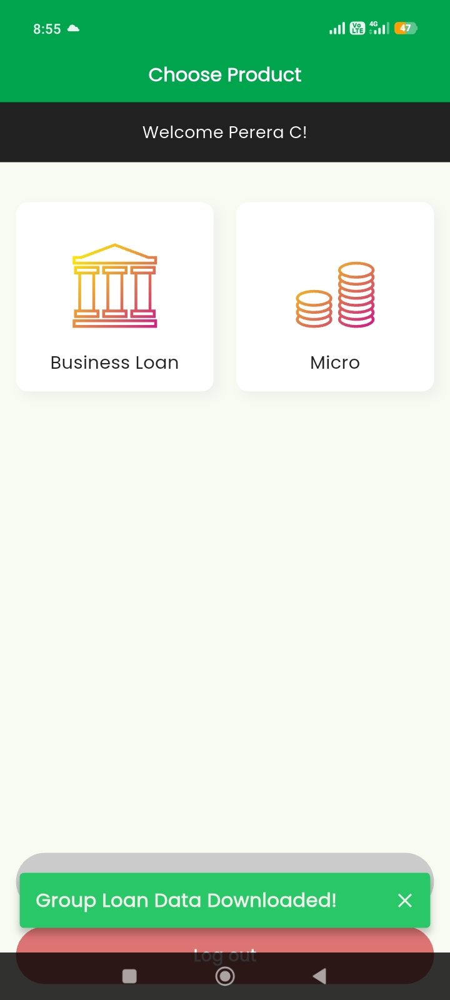
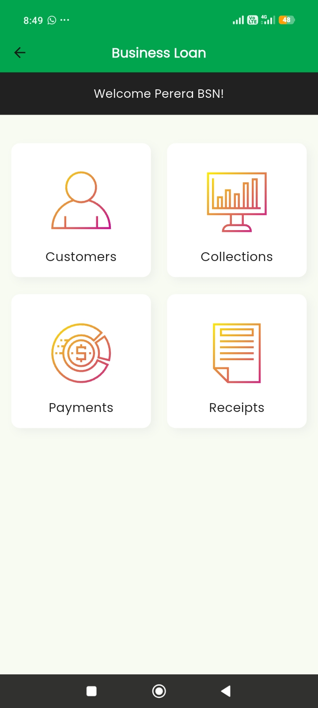
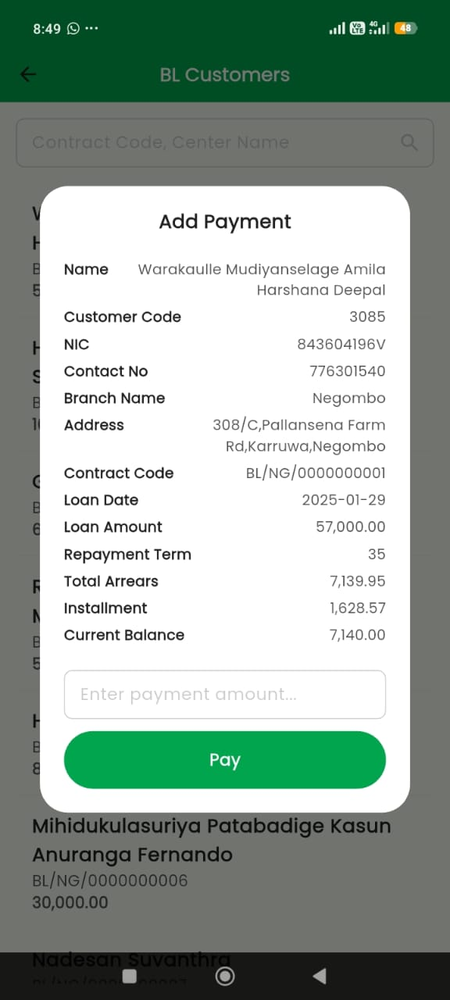
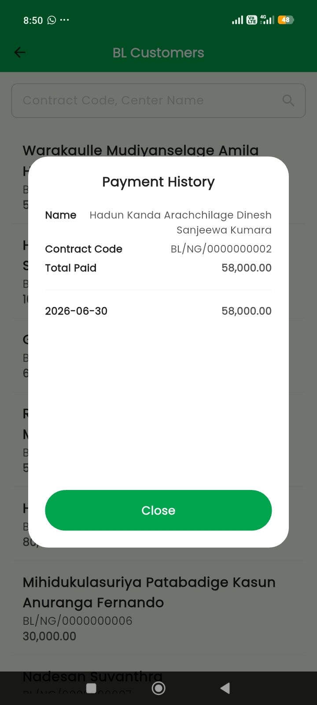
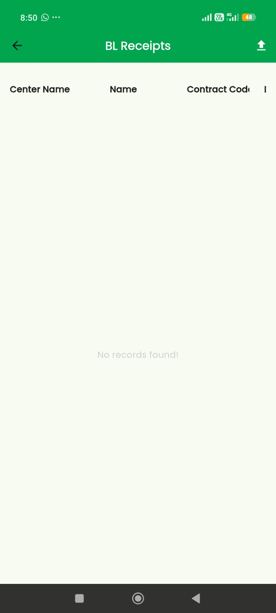
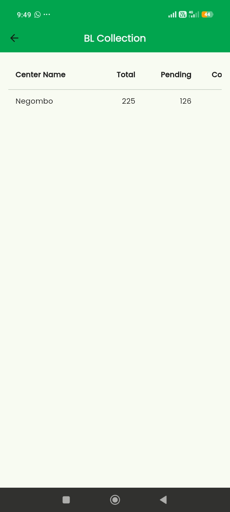

Collection App Guide
1. FDO Setup & System Configuration
Before an FDO (Field Officer) can log into the mobile app, perform the following administrative setup in the central system:
- Create FDO User: Go to
Admin > Common Users. (Select FDO as the designation type when creating the profile.) - Add Centers / Routes:
- Micro Loan:
Microloan > Operation > Center - Business Loan:
Business Loan > Operation > Route
- Micro Loan:
- Assign FDO: Link the FDO user to the center/route via
Microloan / Business Loan > Operation > Add/Change FDO.
Note: If this assignment is missed, assigned loans will not be visible on the mobile app.
2. Logging In & Product Selection
Log into the app using the FDO credentials. Upon login, select the collection type on the Choose Product screen:
- Business Loan: Tap to manage Business Loan customer accounts.
- Micro: Tap to manage Micro Loan customer accounts.

Note: Both loan types follow the exact same process to record and sync payments through the app.
3. App Dashboard & Modules
Selecting a product opens four core operational modules:

3.1 Customers (Recording Payments)
The Customers module is used to record field collections:
- Navigate to Customers.
- Search and select the target customer record.
- Verify loan details in the popup dialog (Contract Code, Loan Date, Loan Amount, Repayment Term, Total Arrears, Installment, and Current Balance).
- Enter the collected sum into the
Enter payment amount...field. - Tap Pay to submit the transaction.

3.2 Payments (Payment History)
Open Payments to view all collected payment records and past history for specific customers (including Contract Code, Total Paid, and Transaction Dates).

3.3 Receipts (Uploading to Core System)
After recording payments, they must be uploaded from the mobile device to the main system:
- Open the Receipts module.
- Select the pending collected payments.
- Tap the Upload Icon (located at the top right) to transfer data to the central database.

3.4 Collections (Summary Reports)
Open Collections to view regional or center-wise summary totals, including total assigned accounts and pending items.

4. Central System Cashier Sync
To finalize uploaded app payments on the central admin platform:
- Navigate to
Cashier > Business Loan(orMicro Loan). - Click Sync Collection Data.
- Review uploaded FDO entries, input the Confirm Cashier Amount, and click Save.
